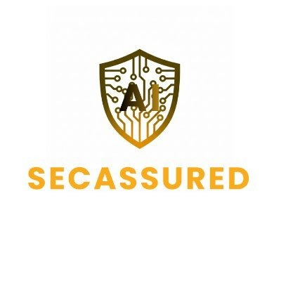
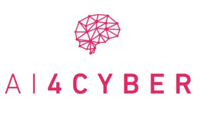

About
I am a Software Engineer and AI/ML Researcher holding an MSc in Artificial Intelligence from European University of Cyprus and a BSc in Applied Informatics from the University of Macedonia. I operate at the intersection of robust backend software engineering, real-time data pipelines, and applied machine learning models.
Currently, I provide technical and engineering support for the EU-funded research project SECASSURED (Horizon Europe) at Public Power Corporation S.A., designing and deploying real-time anomaly detection pipelines for electric vehicle (EV) charging infrastructures.
At Ithaca Lab (University of Western Macedonia), I have contributed across European initiatives (AI4CYBER, TORNADO) and national recovery projects (ASKOS), developing machine learning models for adversarial robustness, intrusion detection systems, and honeypot architectures.
I enjoy building clean, maintainable, and high-performance services using Python, BentoML, PyTorch, Docker, and Kubernetes.
Experience
-
2026 — Present Provide engineering support for the EU-funded research project SECASSURED (Horizon Europe). Designed and implemented an end-to-end, real-time anomaly detection and diagnostics pipeline for EV charging stations using BentoML, WebSockets, PyTorch, and Docker microservices.
- Python
- BentoML
- PyTorch
- MLflow
- Docker
-
2025 — 2026 Contributed to European and national research projects. Analyzed complex cybersecurity datasets, developed machine learning models, and integrated them into robust research infrastructures for real-world applications.
- PyTorch
- Scikit-learn
- NumPy & Pandas
- Honeypots
-
2024 — 2025 Freelance Web Developer · Self-EmployedDesigned and built responsive web applications from end-to-end, converting client business requirements into performant digital solutions.
- JavaScript
- Python
- WordPress
Research Projects
-
Horizon Europe
EU-funded research project establishing cybersecurity and digital infrastructure resilience for secure software supply chains. Led the technical development of an automated, real-time cyberattack anomaly detection and diagnostics pipeline for EV charging networks.
- Cybersecurity
- EV Infrastructure
- MLOps
- Horizon Europe

-
Horizon Europe
Horizon Europe initiative advancing artificial perception, human awareness, and multimodal human-robot interaction (HRI). Implemented algorithms for contextual computer vision and sensor fusion data pipelines.
- Robotics
- HRI
- Deep Learning
-
NRRP Greece
National Recovery and Resilience Plan project focused on protecting critical national infrastructures. Designed experimental threat scenarios, deployed high-interaction honeypots, configured Intrusion Detection Systems (IDS), and authored technical deliverables.
- Honeypots
- IDS/IPS
- Security Architecture
-
Horizon 2020
European Horizon 2020 project creating advanced AI and ML frameworks to enhance system resilience, detect software vulnerabilities, and orchestrate automated threat response.
- Machine Learning
- Vulnerability Testing
- Horizon 2020

Publications
-
2026 I. Ktenidis, A. Liatifis, D. Pliatsios, E. Markakis, P. Fouliras, V. Vitsas, T. Lagkas, et al.
Published in proceedings of the 2026 IEEE International Conference on Communications Workshops (ICC Workshops). Investigates user activity classification within Open Radio Access Networks (O-RAN) while maintaining strict subscriber privacy preservation.
- IEEE ICC 2026
- O-RAN E2
- Privacy Preservation
-
2025 D.-C. Asimopoulos, P. Radoglou-Grammatikis, V. Argyriou, T. Lagkas, P. Angelidis, V. Vitsas, P. Fouliras, I. Ktenidis, and P. Sarigiannidis
Published in proceedings of the 2025 IEEE Globecom Workshops (GC Wkshps), pp. 2000–2005. Proposes a fused gradient and geometric attack architecture to evaluate adversarial robustness and blind spots in neural classification models.
- IEEE GLOBECOM 2025
- Adversarial AI
- Vulnerability Assessment
-
2025 Ioannis Ktenidis
Academic Research & Dissertation (PQDT-Global / European University of Cyprus). Presents an intelligent simulation and resource allocation framework for high-density Internet of Medical Things (IoMT) sensors in telemedicine environments.
- IoMT
- Traffic Simulation
- Resource Optimization
Projects & Code
-
ocpp-intrusion-detection-mlops
End-to-end production MLOps pipeline for real-time cyberattack identification in EV Charging Stations. Implements model tracking, artifact registry, and high-throughput BentoML serving.
- Python
- MLflow
- BentoML
- Docker
EV MLOps -
ev-charging-diagnostics-pipeline
A containerized deep learning pipeline using LogBERT transformers for sequence anomaly detection and automated diagnostic reporting on EV chargers.
- PyTorch
- LogBERT
- Docker
LogBERT -
evcs-federated-active-defense
Containerized active defense loop for EV charging infrastructure using federated learning to coordinate decentralized anomaly mitigation.
- Federated Learning
- Security
FedDefense -
iot-privacy-preserving-techniques
Comparative analysis and pipeline implementation of contextual anonymization techniques utilizing Microsoft Presidio and SpaCy for high-volume IoT data streams.
- Presidio
- SpaCy
IoTPrivacy
Education & Skills
-
2022 — 2025 MSc in Artificial Intelligence · European University of Cyprus
Advanced specialization in deep learning, neural architectures, NLP, and scalable AI infrastructure.
-
2015 — 2021 BSc in Applied Informatics · University of Macedonia
Rigorous foundation in computer science, algorithm design, relational database schemas, and networking.
Programming & Backend
- Python (AsyncIO, WebSockets, Flask)
- BentoML
- Go (Golang)
- JavaScript
- RESTful APIs
AI, ML & Cybersecurity
- PyTorch
- MLflow & MLOps
- LogBERT
- Federated Learning
- Presidio & SpaCy
- Honeypots & IDS
Infrastructure & Databases
- Docker & Docker Compose
- Kubernetes
- SQL (MySQL, MariaDB, PL/SQL)
- Git & GitLab CI/CD
- Linux & Shell